Claude Code Skill 原理图解：几个 Markdown 文件，怎么做到按需加载？
大家好，我是小林。
图解 Claude Code 源码剖析系列已经写过很多篇了，把上下文压缩、记忆机制、多 agent 协作这些硬骨头挨个啃了一遍，这些文章我都收录在 xiaolinnote.com 这个网站上。
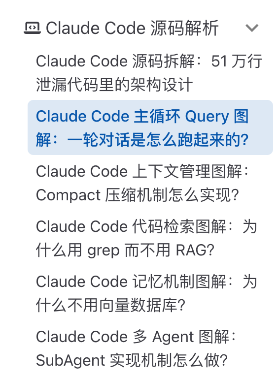
前几天翻了一下评论区，发现一个很搞笑的留言。
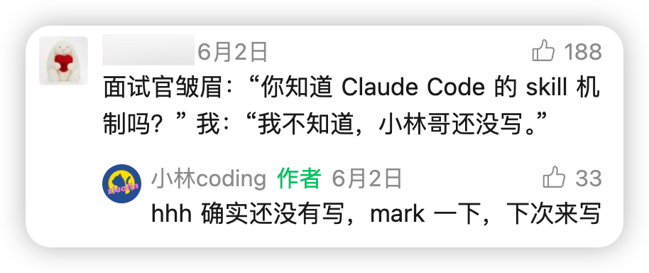
所以这次就来还愿了，剖析一下 Claude Code 的 skill 机制源码，把这块拼图补上。
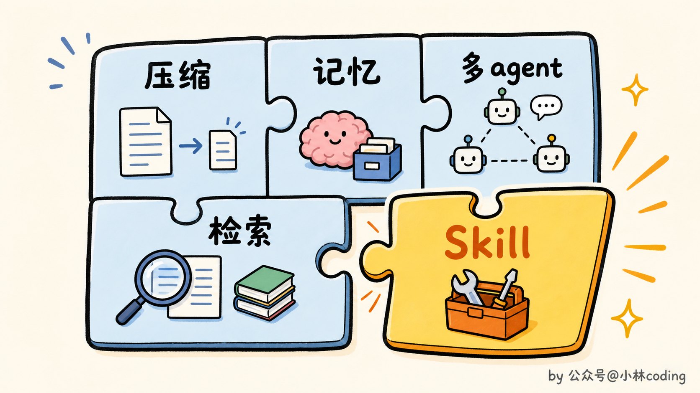
照例先从面试场景说起。
前阵子我翻了一圈读者发来的 agent 岗面经，发现有道题的出镜率高得离谱，「skill 和提示词有什么区别？」
乍一看是道送分题。不少人张口就答，「skill 就是封装好的提示词，写成 Markdown 文件，方便复用」。
这答案不能说错。skill 的载体确实就是几个 Markdown 文件，不用装插件，也不用写什么胶水代码，模型本身更是一根汗毛都没动。
但面试官往往会跟着补一刀，「既然就是提示词，那我直接把内容塞进 system prompt，跟用 skill 有什么区别？」
到这里，一大半人就接不住了。支支吾吾半天，憋出一句「skill 更规范一些」。这个回答等于当场告诉面试官，你只是用过，没想过。
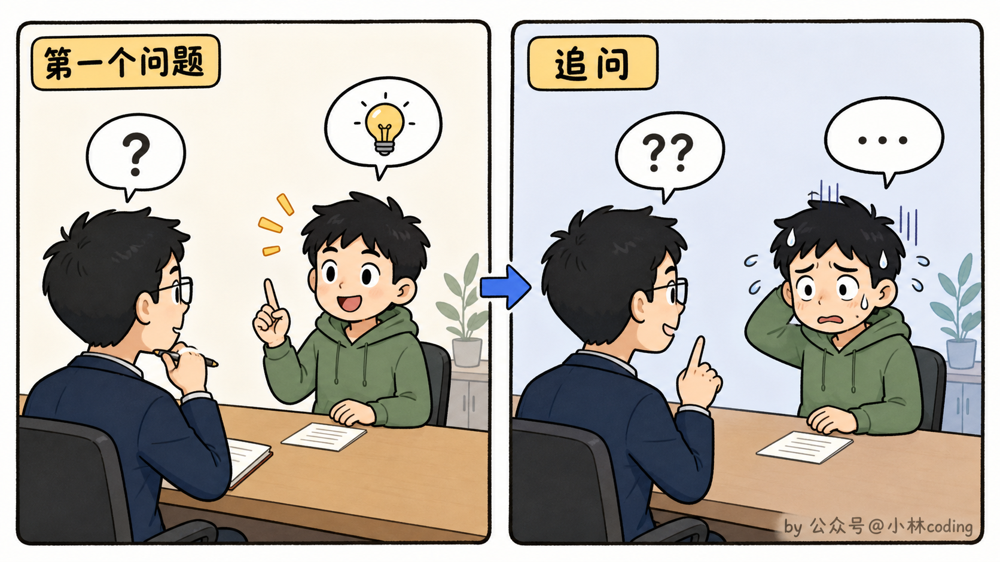
说实话，这道追问出得真好。它恰好戳中了 skill 这套机制真正的含金量，而完整的答案，全藏在 Claude Code 的源码里。我把相关源码翻了个底朝天，这篇文章就来把这道题拆透，重点回答四个问题。
- Skill 到底是个什么东西，跟普通 prompt 差在哪
- 装了几十个 skill，上下文为什么没有被撑爆
- Claude 是怎么知道「当下该用哪个 skill」的
- 想自己写一个好用的 skill，要抓住什么要点
先说结论，这套机制的灵魂就一个词，渐进式披露（Progressive Disclosure）。说人话就是，别一股脑全塞给模型，用到哪层才翻开哪层。
好，开拆。
一、Skill 到底是个什么东西？
先别急着看源码，我们直接拆一个官方 skill 看看长相。
Anthropic 官方开源了一批 skill，其中有个处理 PDF 的。你把它下载下来打开，会看到这样一个目录。
pdf/
├── SKILL.md # 主文件，必须叫这个名字
├── reference.md # 进阶操作的详细文档
├── forms.md # 表单填写的专项说明
└── scripts/
├── fill_form.py # 现成的表单填写脚本
└── ...
就这么点东西。没有二进制文件，没有依赖包，你连个安装脚本都找不到。全是给人也能直接读的文本。
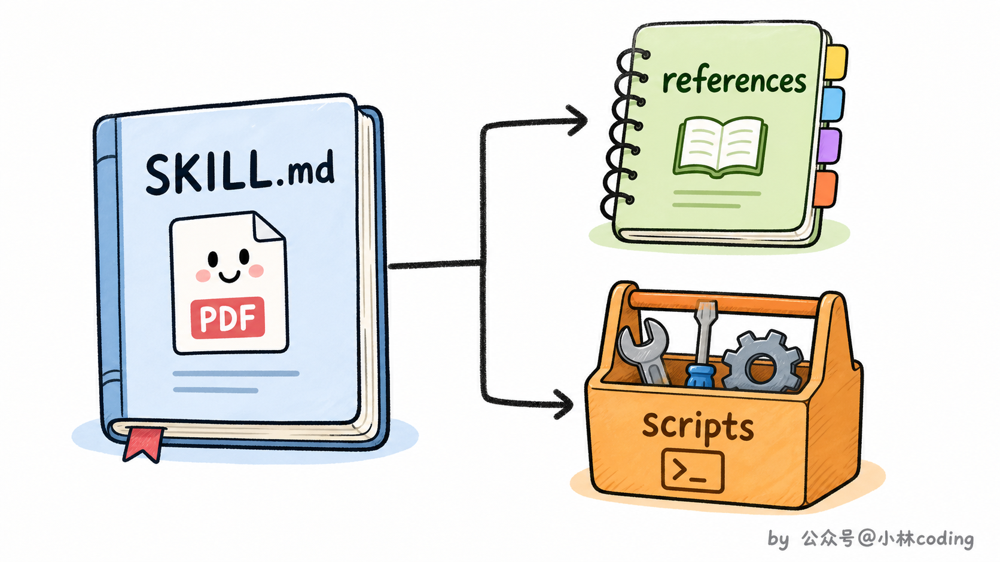
核心是那个 SKILL.md。它的开头有一段用 --- 包起来的元信息，行话叫 frontmatter，长这样。
---
name: pdf
description: 处理 PDF 文件的技能。当用户需要读取、
生成、合并 PDF，或者填写 PDF 表单时使用。
---
# PDF 处理指南
读取 PDF 文本用 pdftotext 命令...
表单填写这种复杂操作，先阅读 forms.md...
frontmatter 里最重要的就两个字段。name 是这个 skill 的名字，description 描述它是干什么的、什么时候该用它。往下的正文，就是一份操作指南，告诉模型处理 PDF 该用什么工具、遇到复杂情况去读哪个补充文档。
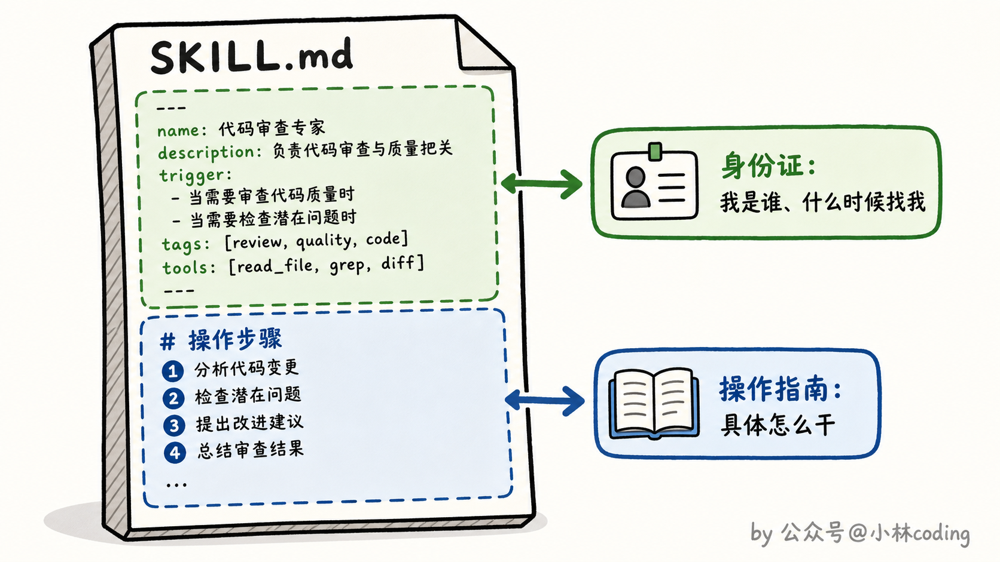
看明白了吗？skill 没给 Claude 装任何新器官，说白了就是发了本操作手册。
我喜欢用新员工入职来打这个比方。公司来了个名校毕业的实习生，脑子聪明、基础扎实，但完全不懂你们公司的业务。你会怎么办？
你不会给他做开颅手术往脑子里灌知识，你会扔给他一本入职手册。「报销流程看第三章」「代码规范看附录二」「数据库连接方式问运维前先看第五章」。
skill 就是 Claude 的入职手册。模型本身的能力一点没变，变的是它手头多了一份「你家业务的说明书」。
frontmatter 里其实还有不少可选字段，比如限制这个 skill 能用哪些工具的 allowed-tools、指定用哪个模型来执行的 model，这些偏进阶，本文就不展开了，你先记住 name 和 description 这两个主角就行。
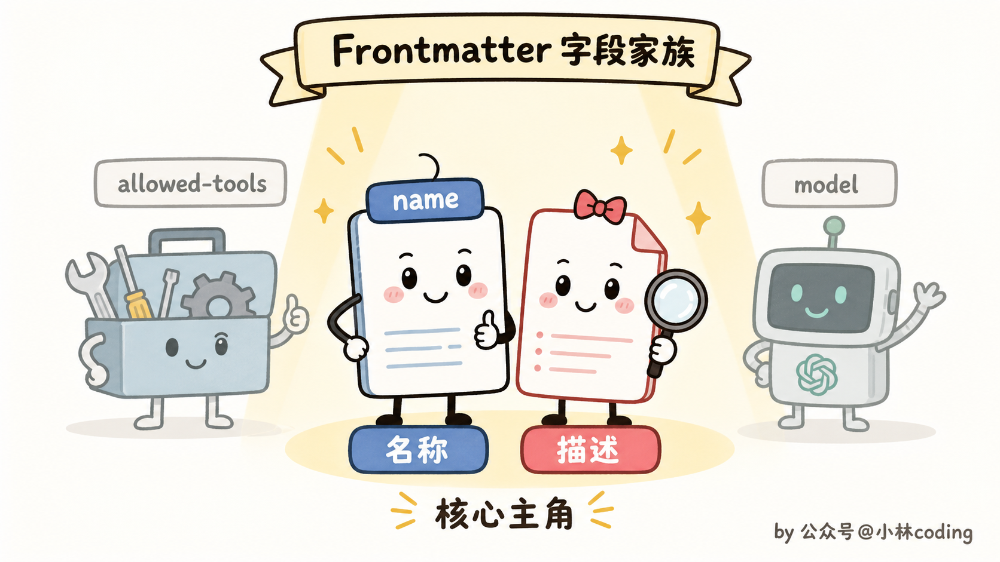
顺便说一句，这个格式已经不是 Claude Code 的私有玩法了。Anthropic 把它定名为 Agent Skills 并且开源，说白了就是想把「给 agent 写说明书」这件事变成行业通用标准。
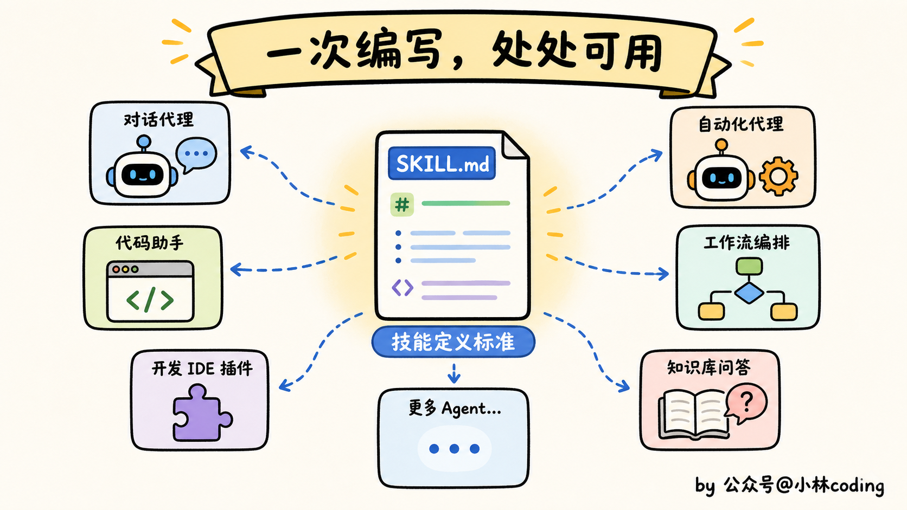
二、五分钟写一个最小 skill
光看别人的不过瘾，我们自己动手写一个。
场景就选一个程序员天天撞见的。团队 code review 总有几条雷打不动的规矩，变量名不许瞎起、魔法数字要提成常量、异常不许静默吞掉。每次让 Claude 帮忙看代码，都得把这些规矩重新交代一遍，烦死了。
现在把它做成 skill，三步搞定。
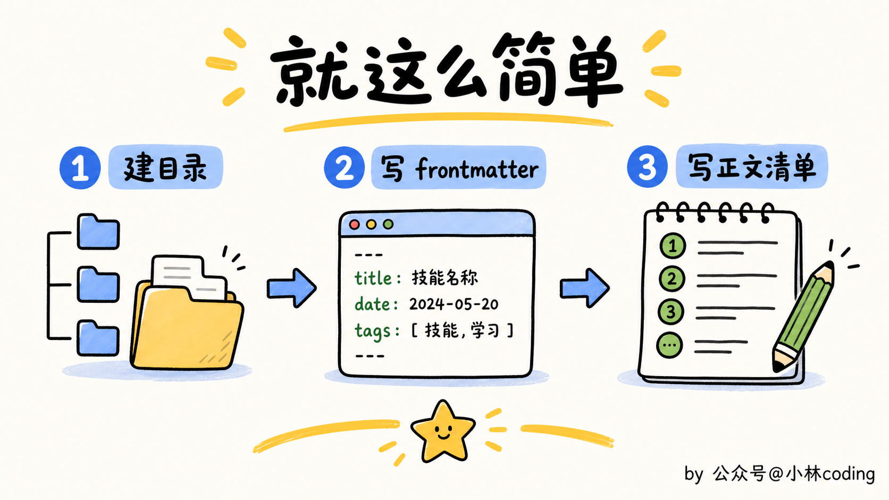
第一步，建目录。用户级的 skill 统一放在家目录的 .claude/skills/ 下面，一个 skill 一个文件夹。
mkdir -p ~/.claude/skills/style-check
第二步，在里面创建 SKILL.md，写上 frontmatter。
---
name: style-check
description: 检查代码是否符合团队风格规范。
当用户要求检查代码风格、评审代码时使用。
---
第三步，往正文里写你的规矩。
# 代码风格检查清单
逐条检查以下规则，输出违反项和修改建议。
1. 变量名要有业务含义，不许用 a、b、tmp 这种
2. 魔法数字必须提成有名字的常量
3. 捕获异常不许静默吞掉，至少打一行日志
保存，收工。整个过程没编译没注册，重启都不需要，你只是写了一篇一百来字的 Markdown。
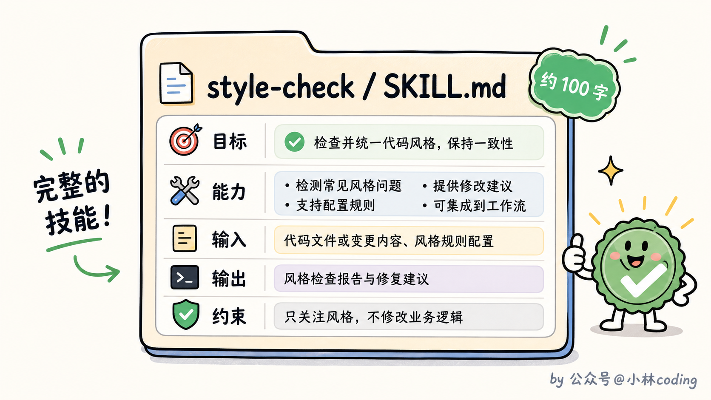
怎么用它？两种方式。
第一种，你自己手动召唤。在对话框里敲 /style-check，Claude 就会拿着你这份清单去干活。
第二种更有意思，你压根不提 skill 的名字。直接说「帮我看看这段代码写得规不规范」，Claude 会自己反应过来「这活我有本手册管着」，主动翻出 style-check 来执行。
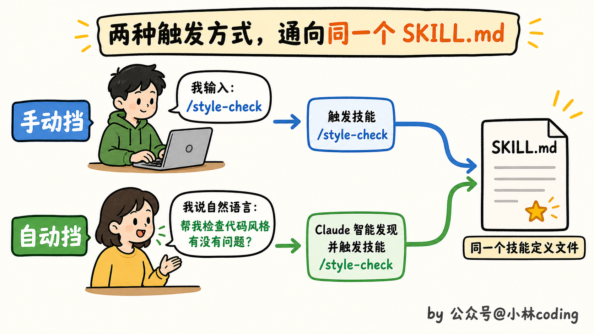
我第一次看到自动挡生效的时候，是真有点惊讶的。我没有说任何暗号，它就是知道该用哪本手册。
先把这个惊讶存着，后面第四节专门拆它。这里先来算一笔更要命的账。
我这个 skill 才一百来字，没什么负担。但你看看社区里那些正经 skill，一份 SKILL.md 几千字起步，再带上好几个补充文档。而一个重度用户装几十个 skill 稀松平常，我自己机器上现在就躺着三十多个。
假设装了 50 个 skill，每份手册平均折算 3000 token（token 说人话就是模型眼里的「字数」）。如果把它们全文塞进系统提示词，光这一项就是 15 万 token。
Claude 的上下文窗口一共才 20 万 token。手册占掉四分之三，你还干不干活了？
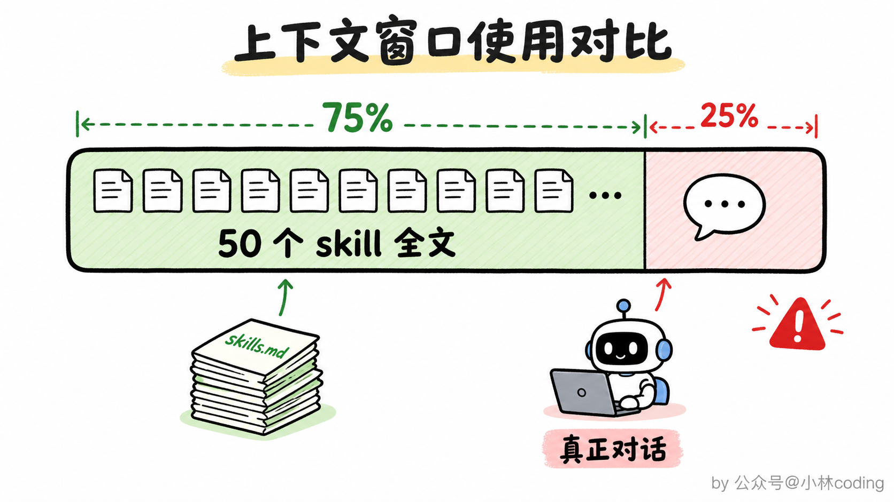
而且更亏的是，这 50 本手册里，当前这轮对话可能一本都用不上。你让 Claude 改个 bug，它上下文里却常驻着「PDF 表单填写指南」和「Excel 透视表操作手册」，纯纯的浪费。
现在你应该品出来了，面试官那句「为什么不直接塞进 system prompt」，戳的就是这个要害。skill 显然不能全文常驻上下文，但不放进上下文模型又看不见它。这个死结怎么解？
Claude Code 的解法，就是开头说的那个词，渐进式披露。
三、渐进式披露：Claude 怎么做到「用时才翻书」？
先想想人类自己是怎么解决这个问题的。你家里有几百本书，你不会把每本都背下来。你记住的只是书脊上的名字，大概知道每本讲什么。真要用的时候，把那一本抽出来读。读的时候发现要查细节，再翻到书末的附录。
Claude Code 把 skill 的加载拆成了一模一样的三层。
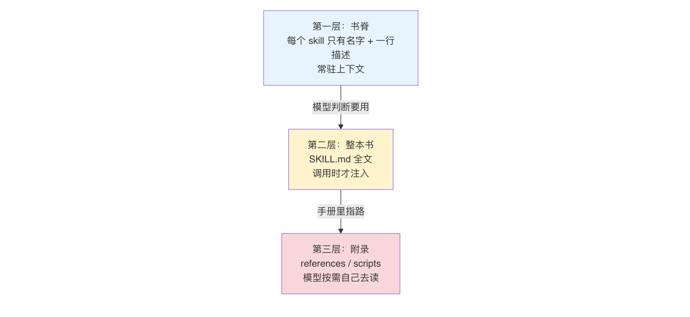
一层一层拆开讲。
第一层：常驻的只有「书脊」
Claude Code 启动后，会把所有 skill 的名字和描述拼成一份清单，跟着系统提醒（system-reminder）一起送进上下文。注意，只有名字和描述，正文一个字都不带。
这份清单长这样。
- style-check: 检查代码是否符合团队风格规范...
- pdf: 处理 PDF 文件的技能。当用户需要读取...
- commit: 根据暂存区变更生成规范的提交信息...
一个 skill 一行，像不像图书馆的书目卡片？
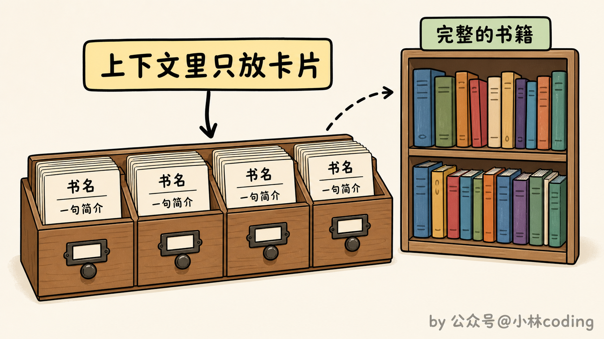
这份清单能占多大地方，源码里写得明明白白。
// src/tools/SkillTool/prompt.ts
export const SKILL_BUDGET_CONTEXT_PERCENT = 0.01
export const MAX_LISTING_DESC_CHARS = 250
第一行的意思是，整份 skill 清单的预算，只有上下文窗口的 1%。按 20 万 token 的窗口算，就是 2000 个 token 左右。第二行是单条描述的硬上限，250 个字符，超了直接截断。
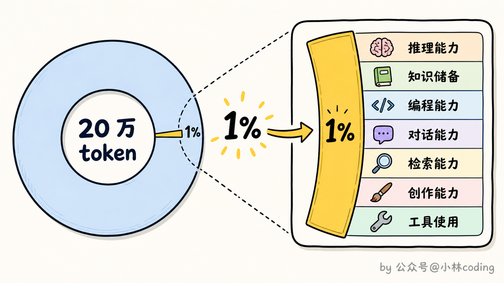
你写的 description 再天花乱坠，进清单时最多留 250 字符。这个设计特别值得咂摸，源码注释里说得很直白，这份清单只用来做「发现」，正文反正调用时会完整加载，描述写太长纯属浪费第一轮的 token。
那如果用户装了两百个 skill，1% 都装不下了怎么办？
源码里有一套完整的降级方案。先尝试全量描述，超预算就按剩余空间把每条描述等比截短，再不行就走最极端的路线，第三方 skill 只留名字，描述全砍。
// src/tools/SkillTool/prompt.ts
return commands.map((cmd, i) =>
bundledIndices.has(i) ? fullEntries[i]!.full : `- ${cmd.name}`,
)
注意这行代码里的小心机，bundledIndices 指的是官方内置 skill，它们的描述永远不被截断，饿死也是先饿第三方。亲儿子待遇，源码从不说谎。
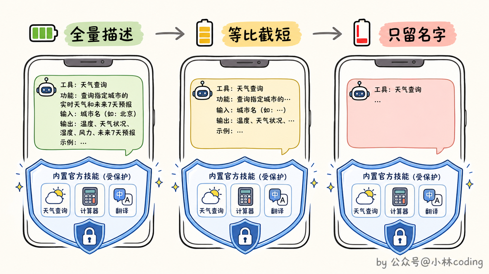
第二层：选中了，才把整本书抽出来
当模型判断当前任务需要某个 skill（怎么判断的下一节细说），它会发起一次调用，这时候 SKILL.md 的完整正文才被读进来，注入当前对话。
注入的方式也很有意思。你以为会塞进系统提示词？错，它包装成一条用户消息（user message），直接插进了对话流。
// src/tools/SkillTool/SkillTool.ts
newMessages: tagMessagesWithToolUseID(
[createUserMessage({ content: finalContent, isMeta: true })],
toolUseID,
),
看到那个 isMeta: true 了吗？这条消息被标记成「元消息」，模型能看到，但界面上不会像真的用户发言一样刷出来。效果就是，你在屏幕前只看到 Claude 调了一下 skill，而它的视角里，是有人悄悄把整本手册摊开在了它面前。
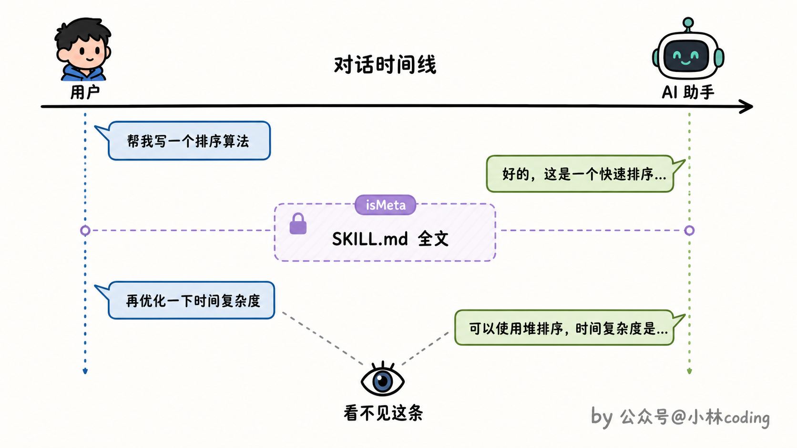
为什么走 user message 而不是改 system prompt？你可以想想。
系统提示词在整个会话里是要反复使用的，改动它会导致提示词缓存（Prompt Cache）大面积失效，每轮都重新计费。而追加一条消息是纯增量，前面的缓存一点不伤。这又是一个「抠 token 抠到骨子里」的细节。
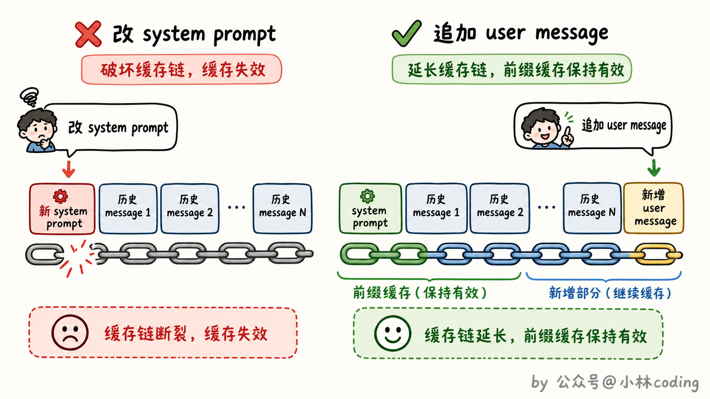
第三层：附录，连第二层都懒得进
还记得 pdf skill 目录里那几个 reference.md 和脚本吗？它们在第二层注入时依然不会被加载。
SKILL.md 正文里只是留了几句指路的话，「表单填写这种复杂操作，先阅读 forms.md」。模型读到这句，真遇到表单任务，才会自己动手把那个文件 Read 进来。
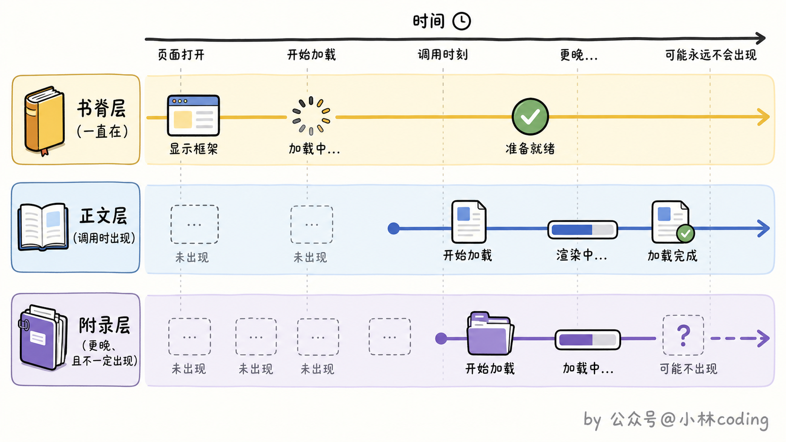
这一层的妙处在于，它根本不需要任何专门的机制。Claude 本来就有读文件的工具，skill 只要在手册里把路指清楚，剩下的交给模型自由发挥。
三层拼起来，我们算一笔总账。
还是 50 个 skill 的场景。全文常驻的方案要 15 万 token。渐进式披露呢？第一层清单撑死 2000 token，第二层只在用到时加载一本手册的几千 token，第三层更是按需付费。
从 15 万降到 2000，75% 的窗口占用变成 1%。这就是为什么你装几十个 skill，Claude Code 一点不见臃肿。
我看到这里的时候突然明白了一件事。什么「教模型新技能」，skill 骨子里就是一套上下文的懒加载系统。
这也就是开头那道面试题的题眼。skill 和提示词的区别，压根不在「内容」上，内容确实都是提示词。差别在于塞 prompt 是把所有东西一次性怼进去，skill 是设计了一套「什么时候、把哪一层、怼给谁」的调度机制。
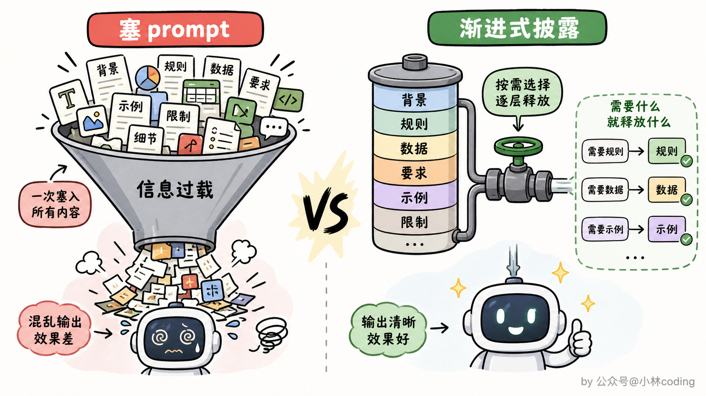
四、Claude 是怎么知道该用哪个 skill 的？
解决了「放得下」，还有个更神的问题，「选得准」。
回到第二节那个场景。我说「帮我看看这段代码写得规不规范」，一个字没提 style-check，Claude 是怎么从三十多个 skill 里精准翻出这一本的？
不着急看答案，你先猜猜。如果让你来设计这个「选 skill」的机制，你会怎么搞？
给你几个候选。给每个 skill 的描述算向量（Embedding），用户说话时做相似度检索？训练一个小的意图分类模型？或者简单粗暴上关键词匹配？
都挺合理的对吧？毕竟「从一堆候选里挑最相关的」，听起来就是个标准的检索问题。
但 Claude Code 的答案是，以上全都没有。
它就是把那份「书脊清单」摆在模型眼前，然后相信模型自己能看懂。
模型每轮生成回复之前，反正都要通读一遍上下文。清单就在里面躺着，用户的需求也在里面躺着，「这个需求跟哪行描述对得上」，这不就是语言模型最擅长的阅读理解吗？
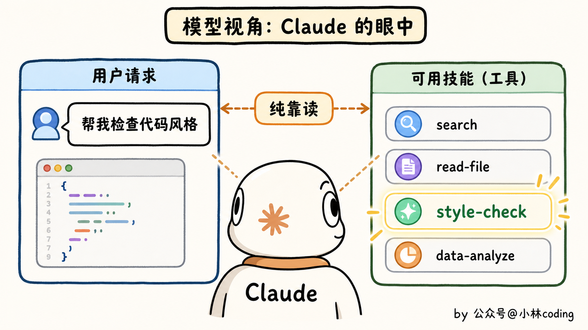
所以那行 description 的分量，比你想象中重得多。它就是 skill 的唯一广告位。源码里能看到，这行广告是由两个字段拼出来的。
// src/tools/SkillTool/prompt.ts
const desc = cmd.whenToUse
? `${cmd.description} - ${cmd.whenToUse}`
: cmd.description
description 说清「我是干什么的」，可选的 when_to_use 字段补一句「什么时候该用我」。两句拼一起，就是模型做判断的全部依据。广告词写得含糊，你的 skill 就会在清单里坐一辈子冷板凳。
光靠模型自觉还不够。模型有时候会「想起来但懒得用」，看到匹配的 skill，却自己顺手把活干了。为了治这个毛病，SkillTool 的工具说明里写了一段措辞相当强硬的指令。
When a skill matches the user's request, this is a
BLOCKING REQUIREMENT: invoke the relevant Skill tool
BEFORE generating any other response about the task
翻译一下，只要有 skill 跟用户请求匹配上，调用它就是一票否决级的硬性要求，必须先调 skill 再说别的。后面还跟了一句「绝不允许嘴上提到 skill 却不真正调用」。
把整条链路串起来，就是这样一个流程。
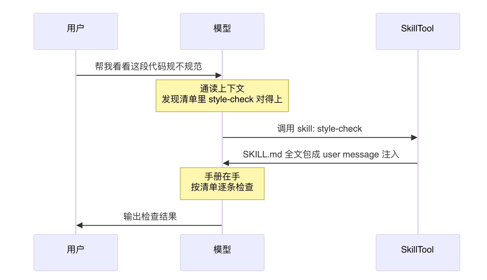
整个选择过程没有一行「检索代码」，全部发生在模型的一次前向推理里。
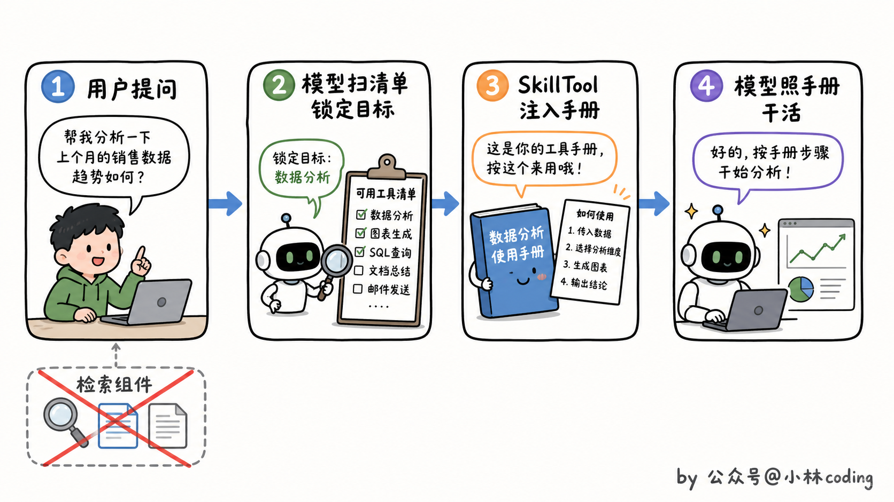
这个设计选择其实贯穿了 Claude Code 的整个源码。读过我之前文章的读者应该有印象，它的检索不用向量库，用的是让模型自己 grep。记忆也不用向量库，用的是让模型自己读写 Markdown。现在选 skill，还是不用向量库。
这背后是一个非常一致的哲学，能靠模型自身理解力解决的问题，绝不外挂一套额外系统。外挂系统看着专业，但每挂一个，就多一处能出故障的地方，多一摊要维护的东西，还得天天操心「检索不准怎么办」。而模型的阅读理解能力，是随着模型升级白嫖变强的。
当然，这套「纯靠读」的方案也有软肋。skill 数量真到几百个、描述行被截得只剩名字的时候，匹配准确率肯定会掉。不过对绝大多数装几十个 skill 的用户来说，这个天花板还远碰不到。
五、你敲的 /命令 和 skill，其实是同一个东西
用过 Claude Code 的读者肯定敲过斜杠命令，/commit、/review-pr 这种。你有没有想过，这些命令和 skill 是什么关系？
我原本以为是两套独立系统。翻完源码发现，好家伙，它们压根就是同一个东西。
在源码内部，slash command 和 skill 已经统一成了一套 Command 体系。用的是同一个数据结构，加载和执行走的也全是同一条路。SkillTool 的工具说明里甚至直接挑明了。
When users reference a "slash command" or "/<something>",
they are referring to a skill.
用户嘴里的「斜杠命令」，就是 skill 的另一个名字。
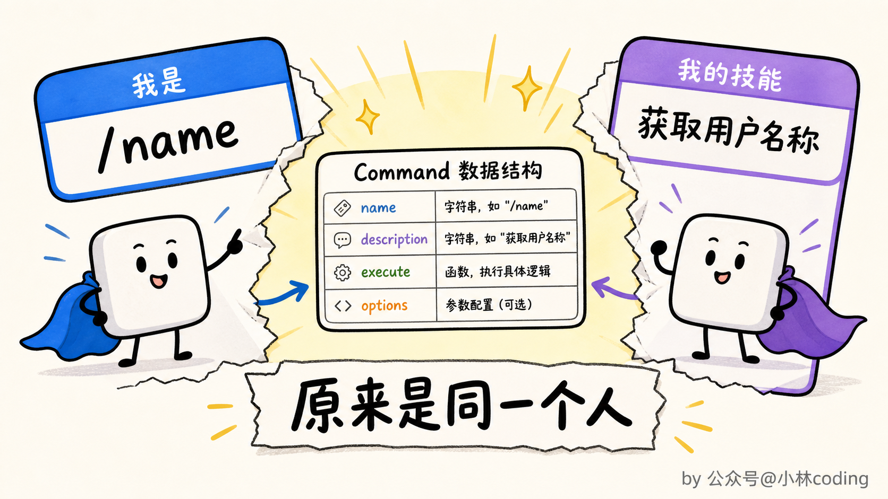
所以准确的说法是，一个 skill 天生有两个触发入口。人可以敲 /名字 手动触发，模型可以在判断匹配时自主触发。第二节演示的手动挡和自动挡，走的就是这两个入口，殊途同归。
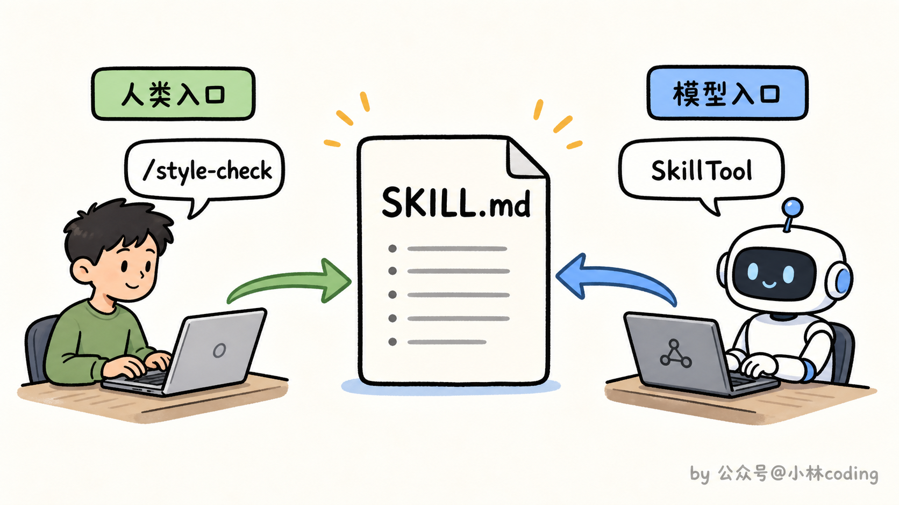
更好玩的是，这两个入口还各配了一个开关，都写在 frontmatter 里。
第一个开关叫 disable-model-invocation。设为 true 之后，模型就不许自主调用这个 skill 了，只有人手敲才能触发。源码里对应一段拦截逻辑，模型敢调就直接报错弹回去。
什么场景用它？危险操作。比如你写了个「一键发布上线」的 skill，你肯定不希望模型觉得「时机成熟」就自己发布了，这种必须留给人来扣扳机。
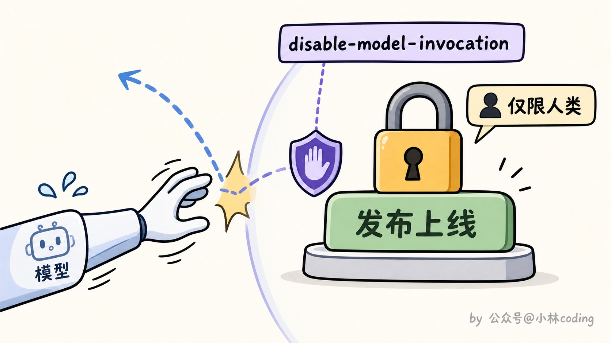
第二个开关反过来，叫 user-invocable。设为 false，这个 skill 就从斜杠命令菜单里消失，人敲不出来，只有模型能调。
这个又是什么场景？纯背景知识类的 skill。比如「本项目的数据库表结构说明」，它不是一个「动作」，人敲它没有意义，但模型干活时随时可能需要翻它。
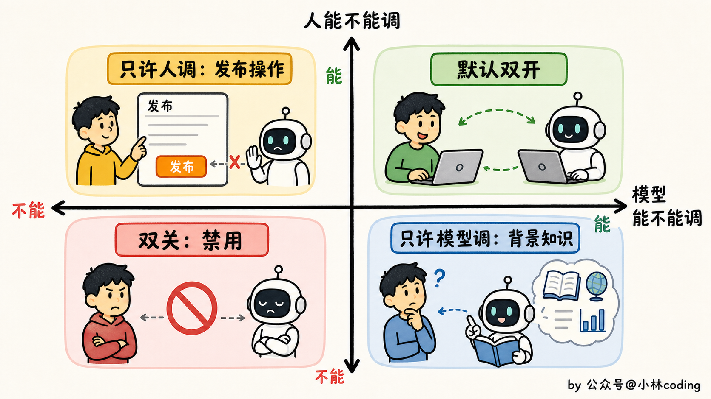
就这么一套文件格式，配上两个入口和两个开关，把「人的工具」和「模型的知识」全装下了。这个统一做得是真优雅。
六、skill 不只是静态文档：参数和动态内容
到这里你可能觉得 skill 已经看透了，不就是按需加载的 Markdown 嘛。
还真没完。skill 的正文不是写死的，里面还能玩出两个动态花样。
第一个花样，接收参数。
正文里可以写 $ARGUMENTS 占位符。用户敲 /style-check 只查命名问题 的时候，「只查命名问题」这串话会被原样填进占位符的位置。模型自主调用时同样可以传参。
第二个花样更猛，执行命令。
正文里可以用 !命令 的语法嵌一段 shell 命令。skill 被调用的那一刻，Claude Code 会先把这条命令跑了，把输出结果填进正文，再把填好的成品交给模型。
这两个花样在源码里就是紧挨着的两步处理。
// src/skills/loadSkillsDir.ts
finalContent = substituteArguments(finalContent, args, ...)
// ...
finalContent = await executeShellCommandsInPrompt(finalContent, ...)
第一行做参数替换，第二行执行嵌入的命令。模型最终读到的正文，是已经填满了「实时数据」的版本。
拿我们第二节那个风格检查 skill 升个级，你立刻能感受到威力。给正文加一行。
待检查的代码如下：
!`cat $ARGUMENTS`
现在敲 /style-check UserService.java，Claude Code 会先执行 cat UserService.java 把代码读出来，直接怼进 prompt。模型睁眼一看，检查清单和待检查的代码已经并排摆好了，一步到位。
官方的 /commit 命令也是这么玩的，正文里嵌了 !git diff，调用瞬间把你的代码变更抓进上下文，模型看着真实的 diff 写提交信息。
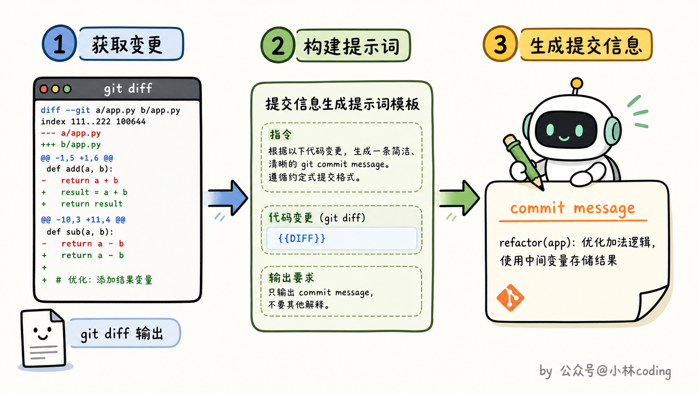
不过看到「skill 能执行命令」这几个字，你后背应该有点发凉。要是有人在网上发了个带恶意命令的 skill 呢？
源码里对此有一道明确的防线。
// src/skills/loadSkillsDir.ts
if (loadedFrom !== 'mcp') {
finalContent = await executeShellCommandsInPrompt(...)
}
来自 MCP 服务器的远程 skill，永远不执行正文里嵌的命令。源码注释写得很直接，MCP skill 是远程内容，不可信。只有你本地目录里的 skill 才享受动态展开的待遇，毕竟本地文件是你自己放进去的，出了事也怪不着别人。
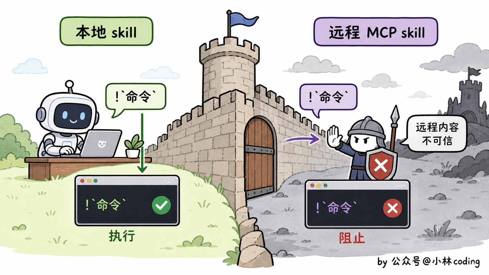
七、这些 skill 都是从哪里冒出来的？
一个 skill 从你写完，到出现在 Claude 眼前的清单里，中间发生了什么？
Claude Code 启动时会去好几个地方搜罗 skill，源码里这段扫描逻辑一目了然。
// src/skills/loadSkillsDir.ts
const userSkillsDir = join(getClaudeConfigHomeDir(), 'skills')
const managedSkillsDir = join(getManagedFilePath(), '.claude', 'skills')
const projectSkillsDirs = getProjectDirsUpToHome('skills', cwd)
加上代码其他位置注册的来源，skill 总共有五个来处。
一是官方内置，随 Claude Code 发行自带的那批，比如前面提过的 commit。二是用户级，你家目录 ~/.claude/skills/ 里的，走到哪跟到哪。三是项目级，项目仓库 .claude/skills/ 里的，只在这个项目里生效。四是插件，随安装的插件打包带来的。五是 MCP，远程服务器动态提供的。
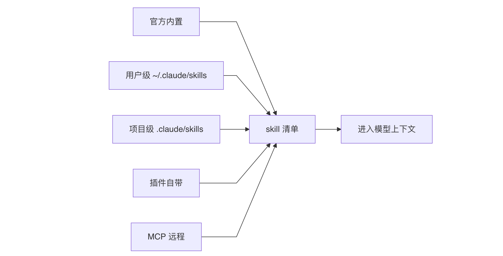
五个来处里面，我最想单独夸一夸项目级这个。
skill 放在项目的 .claude/skills/ 目录里，意味着它会跟着代码一起进 git 仓库。新同事克隆项目的那一刻，团队沉淀的所有「操作手册」自动就位。部署流程怎么走、评审要盯哪些点，这些以前靠口口相传的东西，现在全在仓库里躺着。
以前这些东西写在 wiki 里，写完就烂。现在它们是能被 agent 直接执行的活文档，谁用谁更新，这是我觉得 skill 对团队协作最实在的改变。
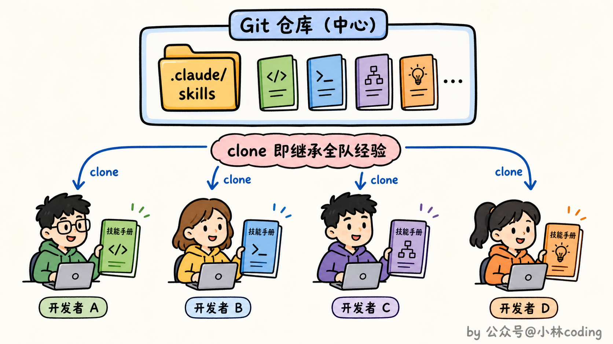
来源一多，马上就有一个问题，撞名了怎么办？项目级和用户级各有一个 style-check 呢？
源码的处理简单直接，扫描按固定顺序进行，同一个文件身份先到先得，后来的重名直接跳过并记一条日志。项目级排在用户级后面加载，所以别指望在项目里「覆盖」用户级的同名 skill，起名的时候错开才是正道。
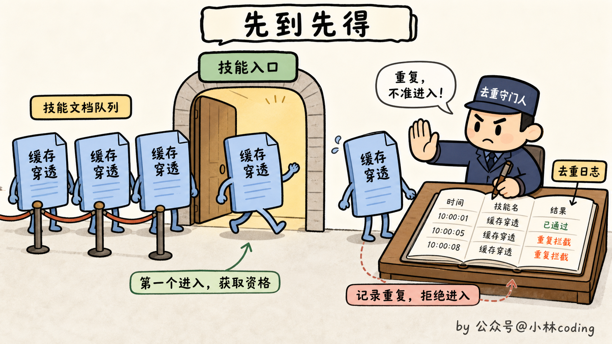
八、怎么写好一个 skill？
原理拆完了，最后把方向盘交回你手上。上面这些机制反过来看，就是三条「怎么写好 skill」的心法。
第一条，description 按广告词的标准写，重点写「什么时候用我」。
第四节说过，description 是 skill 的唯一广告位，模型全靠它做匹配，而且进清单时最多保留 250 个字符。这几乎逼着你放弃功能罗列，把最宝贵的字数花在触发场景上。
对比感受一下。「这是一个功能强大的代码质量工具，支持多种语言」，这种写法模型根本不知道什么时候该翻你的牌子。换成「检查代码是否符合团队风格规范。当用户要求检查代码风格、评审代码时使用」，动词全是用户嘴里会说出来的词，一对就上。
第二条，SKILL.md 管今天，references 管细节。
渐进式披露的第三层是留给你主动利用的。SKILL.md 只写高频主干流程，把低频的、超长的细节拆到 references 目录，正文里留一句指路的话就行。这样第二层注入时又轻又准，细节等模型真需要时自己去翻。
一个糙但好用的标准，SKILL.md 超过 500 行，就该考虑动刀拆附录了。
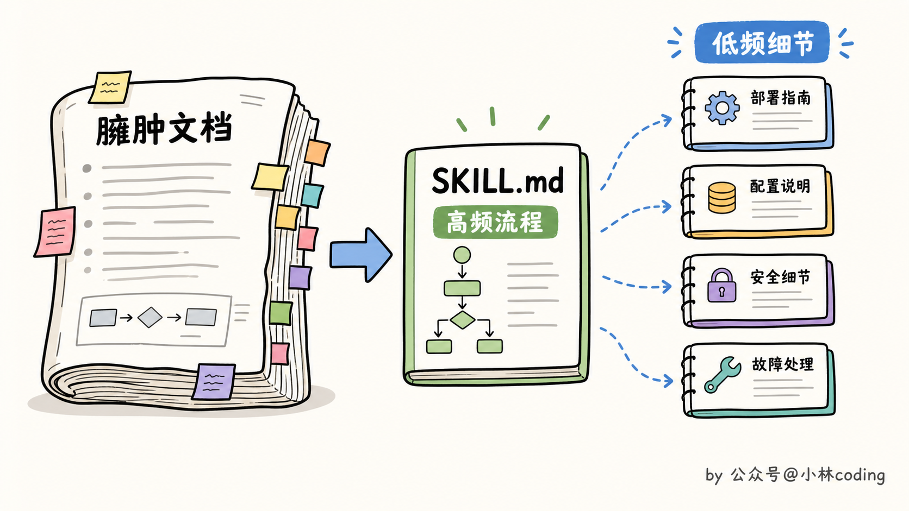
第三条，重复劳动写成脚本，别让模型每次现想。
如果 skill 里有一步是固定的机械操作，比如某种固定格式的转换，与其在正文里教模型「第一步第二步第三步」，不如直接写个脚本放进 scripts 目录，正文里一句「执行这个脚本」。
模型现想是有失败率的，今天想对了明天可能想歪。脚本没有失败率，跑一万次一个样。所以能固化成脚本的就别让模型现想，这是写 skill 最重要的手感。
最后总结
Skill 表面上是「几个 Markdown 文件」，拆开看是一整套精密的上下文调度系统。
「放得下」靠的是三层渐进式披露，几十个 skill 常驻的开销被压到窗口的 1%。
「选得准」就更省事了，一行 description 加上模型自己的阅读理解，检索系统一概没上。
人敲的斜杠命令和模型的自主调用，在源码里本来就是同一个东西的两个入口。
而参数插值和命令预执行，又让 skill 在调用时能填进参数、带上命令的实时输出，不只是一份写死的静态文档。
现在再回到开头那道面试题，「skill 和提示词有什么区别」。下次再被问到，你可以直接这么答。
「skill 的内容确实就是提示词，这个没错。但区别不在内容，在加载方式。提示词是一股脑全塞进上下文的，skill 走的是渐进式披露，分层按需加载。平时上下文里只常驻一行描述，模型自己判断这活用得上了，正文才会被注入进来，更细的参考文档还能再懒一层，真用到才去读。所以我的理解是，提示词是知识本身，skill 是知识的加载策略。」
面试官听到「渐进式披露」这四个字，大概率就坐直了。
如果这篇对你有帮助，帮我点个「在看」，我们下期见。